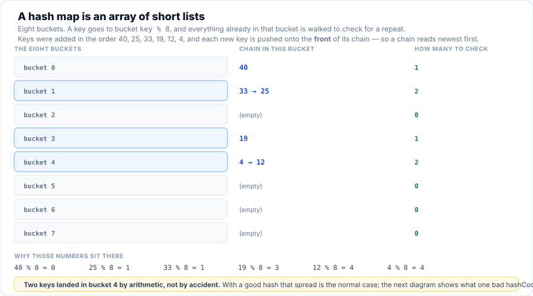

Session 11B — Data Structures, By Hand
Session 11 showed you the classes Java shipped first and the ones that replaced them.
Today you find out what the replacements are made of. You will write a dynamic
array and watch it grow by doubling; a hash map with buckets and chains and a histogram you can
read; and a ring buffer in which head and tail wrap around with one
%. Then comes the payoff Session 10 promised: give a class a bad
hashCode() and watch every key fall into a single bucket. One check suite
runs against your structures and the JDK's, so “mine behaves the same” stops being an
opinion.
- Build a growable
intarray from an array, a size counter and one growth rule, and explain why the growth rule is doubling. - Count the element copies a growth costs, and derive from that count why
add()is called O(1) amortised rather than O(1). - Measure the cost of
getand of a scan by counting array reads, and say why a count is better evidence than a millisecond reading. - Build a hash map: hash the key, mask it to a bucket, chain the collisions — and predict which bucket a given key lands in before running the program.
- Explain when a table doubles, and work out the key counts that trigger each rehash from the load factor alone.
- Break a map on purpose with a bad
hashCode(), and with anequals()/hashCode()pair that disagree — then repair both. - Build a ring-buffer deque, and say why
push+popis a stack,push+pollis a queue, and one class is both. - Run one check suite against two implementations, and use the result as evidence that behaviour was preserved.
- State what a green suite does not prove, and give an example of two structures that pass the same checks and are not equally fast.
- Decide when to write a data structure yourself and when to use the JDK's — and justify writing one you will then delete.
Your Roadmap for Today
Why This Matters
For eleven sessions you have been given data structures and told what they cost.
ArrayList.get(i) is O(1). A HashMap lookup is O(1). A queue should be a
Deque, not a Stack. All true, all memorised, and none of it is knowledge
you can use under pressure — because when a lookup is mysteriously slow in your own code, the
sentence “a hash map is O(1)” gives you nothing to look at.
The difference between knowing a fact and being able to use it is having built the thing
once. After today, “O(1)” stops being a claim you accept and becomes a sentence about a
line of code you wrote: one array read, one addition, one mask. And when something is slow, you
will have the one question that actually finds the problem — what does this key's
hashCode() return in binary? — instead of a shrug.
There is a second reason, and it is the honest one. Everyone in this room will read far
more data-structure code than they write. You will be handed a cache somebody wrote by
hand, a queue with an off-by-one in its wrap arithmetic, a class whose equals and
hashCode disagree. Being able to read those in five minutes rather than five hours is
a professional skill, and it is not taught by using ArrayList.
ArrayList on Monday, exactly as you should. But the next time the car makes
a noise, you will know which part is making it, and you will not pay somebody to tell you it is
the exhaust when it is the brakes. Using a tool and understanding it are
different skills, and only one of them can be borrowed.
Part 1 of 9 Why Build One When the JDK Ships One?
Fair question, and it deserves a straight answer before you write a line of code. The JDK's structures are better than anything you will write today: they are faster, they have been tested by millions of programs for thirty years, and one of them was written by people who have forgotten more about hash tables than this course will ever teach you. You are not going to replace them. Ever. Everything you build today gets deleted at the end of Part 9, and that is not a joke — it is the lesson.
So why write them? Because there are three questions the JDK's classes cannot answer for you, and all three of them come up in real work:
-
“Why is this slow?” A
HashMapthat has stopped being a map looks exactly like aHashMapthat is working. It returns the right answers. The only way to tell the difference is to know what is inside it — and the only way to know that without taking somebody's word for it is to have built one. - “What does this number mean?” O(1), O(log n), “amortised”, “load factor 0.75”. These are all descriptions of code you are about to write. A definition you memorised decays; a measurement you made yourself does not.
- “What is this code doing?” Which is the question you will actually be paid to answer. Somebody's hand-rolled ring buffer, somebody's open-addressed table, somebody's linked list with a bug in the middle — you will meet all three, and the shape of the code will be familiar on sight if you have written one yourself.
The three structures are chosen because each one teaches one idea and nothing else:
- A dynamic array (
IntList) — an array that cannot grow, wrapped in a class that replaces it when it fills. One idea: amortised cost. - A hash map (
SimpleMap) — an array of short chains, with a mask choosing the bucket. One idea: spread, and what happens when you do not have it. - A ring-buffer deque (
RingBuffer) — one array, two indexes, one modulo. One idea: the front of a queue is a position, not a place.
They are also the three the JDK's ArrayList, HashMap and
ArrayDeque are built on, which is where Part 8 lands: once you have your own, the
JDK's stop being magic and become the same design with thirty years of polish.
Part 2 of 9 Your Own Dynamic Array
Session 1 told you that ArrayList is backed by an array and that get(i) is
O(1). Both halves of that sentence matter, and the second one is easy to take on trust because it
sounds like good news. Here is the problem it hides: a Java array cannot get longer.
new int[4] is four slots, forever. So a list that appears to grow is not growing
anything — it is throwing the array away and building a bigger one, copying every
element across, every so often.
The whole of IntList is three fields and four short methods. Every line of it exists to
make one of these decisions:
package com.aptech.s11b.ds;
/**
* A growable list of ints, built by hand.
*
* This is the whole of ArrayList's core idea and nothing else: an array that is usually bigger
* than the data, plus a count of how much of it is used. When the array fills up, a bigger one
* is allocated and everything is copied across. That copy is the only expensive operation, and
* doubling is what makes it rare.
*
* The point of writing it is that nothing here is magic. ArrayList.get(i) is O(1) because it is
* the line {@code return data[index];} below - one array read, whatever the size.
*
* {@code copies} counts the element copies performed by growth, so the cost of add() can be
* measured by counting rather than by timing. A count is deterministic; a millisecond reading
* is noise plus truth.
*/
public class IntList {
private int[] data;
private int size;
private int copies;
private long reads;
/** A list with room for four, which is where the doubling table on the page starts. */
public IntList() {
this(4);
}
public IntList(int initialCapacity) {
data = new int[Math.max(1, initialCapacity)];
}
/** How many elements are actually stored. */
public int size() {
return size;
}
/** How much room the backing array has. Always >= size. */
public int capacity() {
return data.length;
}
/** Total element copies performed by every grow() so far. */
public int copies() {
return copies;
}
/** How many array reads get() has performed. E02 compares this with ArrayList's count. */
public long reads() {
return reads;
}
/** Appends a value, growing the array first if it is full. */
public void add(int value) {
if (size == data.length) {
grow();
}
data[size++] = value;
}
/** One array read. This is the line that makes get() O(1). */
public int get(int index) {
checkIndex(index);
reads++;
return data[index];
}
public void set(int index, int value) {
checkIndex(index);
data[index] = value;
}
/** Up to size reads: the worst case, and the reason contains() is O(n). */
public int indexOf(int value) {
for (int i = 0; i < size; i++) {
if (data[i] == value) {
return i;
}
}
return -1;
}
public boolean contains(int value) {
return indexOf(value) >= 0;
}
/** Removes one element and shifts the rest left, which is the O(n) part. */
public int removeAt(int index) {
checkIndex(index);
int removed = data[index];
System.arraycopy(data, index + 1, data, index, size - index - 1);
data[--size] = 0;
return removed;
}
/**
* The whole trick, in six lines: allocate twice the room, copy the live elements, throw the
* old array away. Every element is copied once per growth, so the total for n adds is about
* n + n/2 + n/4 + ... which is less than 2n - that is why add() is called O(1) on average.
*/
private void grow() {
int[] bigger = new int[data.length * 2];
System.arraycopy(data, 0, bigger, 0, size);
copies += size;
data = bigger;
}
private void checkIndex(int index) {
if (index < 0 || index >= size) {
throw new IndexOutOfBoundsException("Index " + index + " out of bounds for size " + size);
}
}
}
Read add() once more, because it is the entire design in three lines: if the array
is full, make room first; then store. That is the trade. The list keeps an array that is
allowed to be partly empty, and pays for the wasted slots by never having to move an element except
when it grows.
Now watch it happen. The program below adds ten numbers and prints the capacity after each one, so the growth is visible rather than described:
![A dynamic array at two moments, above a table of costs. After four adds, the array holds 10, 20, 30 and 40 in slots 0 to 3, with size 4 and capacity 4 — full, and no room for add(50). After five adds, a new eight-slot array holds the same four elements plus 50 in slot 4, with size 5, capacity 8 and three slots still free. Below, the same cost counted rather than timed: the first to fourth adds go from capacity 4 to 4 and copy nothing; the fifth goes from 4 to 8 and copies 4, for 4 in total; and the ninth goes from 8 to 16 and copies 8, for 12 in total.](../assets/img/diagrams/s11b_dynamic_array_growth.svg)
Twelve copies for nine adds. That number is worth sitting with, because it is the answer to a
question people usually get wrong: is add() O(1) or is it O(n)? It is
genuinely both. Eight of the ten adds in that trace wrote one element and nothing else —
that is O(1). The fifth and the ninth allocated an array and copied everything — that is O(n).
The reason the JDK can call the method O(1) anyway is that the expensive ones get rarer as
the list gets longer, which is what the second half of E01 measures:
System.out.println("2. The same count for bigger lists");
System.out.println(" adds capacity total copies copies per add");
int[] sizes = {10, 100, 1000, 10000};
for (int n : sizes) {
IntList big = new IntList();
for (int i = 0; i < n; i++) {
big.add(i);
}
System.out.printf(Locale.ROOT, " %-8d %-10d %-14d %.2f%n",
n, big.capacity(), big.copies(), (double) big.copies() / n);
}
System.out.println();
System.out.println(" However large the list, the copies per add stay between 1 and 2 -");
System.out.println(" and they bounce around inside that band, because how much of the");
System.out.println(" last array was in use when it filled depends on where n falls.");
System.out.println(" Growth copies n, then n/2, then n/4 and so on, and that sum is");
System.out.println(" always less than 2n. That is the entire content of the sentence");
System.out.println(" \"add() is O(1)\": not every add, the average one.");Look at the last two columns. Whatever n is, doubling costs between one and two copies per add — not because the growths are cheap, but because there are so few of them. Doubling from 4 to 1024 is eight growths for a thousand adds. That is the entire content of the phrase “O(1) amortised”: not every add is constant-time, the average one is.
And the rule could have been anything. The counter-example is a list that adds ten slots each time instead of doubling, which is exactly as correct and about fifty times the work:
Part 3 of 9 Measuring It Without a Clock
Before the hash map, one detour — because you are about to make claims about cost, and the obvious way to check a claim about cost is wrong. The obvious way is a stopwatch. It is also the reason people argue about performance for a living. Run the same loop twice on the same machine and you get two different numbers: the JIT has warmed up the second time, or a background update started in between, or the laptop throttled. A millisecond reading is the truth plus noise.
There is a better instrument, and you have already used it twice on this page without noticing: count the work instead of timing it. Every operation that matters here bottoms out in the same physical act — reading one slot of an array. Count those and you get a number that is identical on your laptop, on mine, and on the machine that runs this in three years' time, because nothing about it depends on how fast the hardware is. What the count measures is the shape of the work, which is what O(1) and O(n) have always been about.
The catch is that you can only count a structure that counts itself. So the program below does
something worth noticing before you read it: it subclasses ArrayList and
overrides get() purely to count. That is the only reason the JDK's list can be
put in the same table as ours — both sides are now counting the same thing.
/** An ArrayList that counts its own get() calls, so both sides measure the same thing. */
@SuppressWarnings("serial")
static final class CountingList extends ArrayList<Integer> {
private long reads;
long reads() {
return reads;
}
@Override
public Integer get(int index) {
reads++;
return super.get(index);
}
}
public static void main(String[] args) {
System.out.println("Two lists, one loop. We count array reads, never milliseconds.");
System.out.println();
System.out.println("1. Reading three known positions");
System.out.println(" size IntList: 3 gets ArrayList: 3 gets");
for (int n : new int[]{10, 1000, 100000}) {
IntList mine = fill(n);
CountingList jdk = fillJdk(n);
System.out.printf(Locale.ROOT, " %-10d %-20d %d%n",
n, threeGets(mine), threeGets(jdk));
}
System.out.println(" Three reads in each, and the size never enters into it. That is O(1):");
System.out.println(" the work does not grow when the list does. IntList gets it from one");
System.out.println(" line - return data[index]; - and ArrayList from the same line.");
System.out.println();
System.out.println("2. Scanning for a value - the same loop over each structure");
System.out.println(" size IntList first IntList last IntList absent ArrayList last");
for (int n : new int[]{10, 1000, 100000}) {
IntList mine = fill(n);
CountingList jdk = fillJdk(n);
System.out.printf(Locale.ROOT, " %-10d %-16d %-15d %-17d %d%n",
n, scanIntList(mine, 0), scanIntList(mine, n - 1),
scanIntList(mine, -1), scanArrayList(jdk, n - 1));
}
System.out.println(" Finding the last element costs n reads; finding a value that is not");
System.out.println(" there costs n as well. The hand-written list and the JDK's agree to");
System.out.println(" the read, because the algorithm is the same. What would change the");
System.out.println(" cost is a different algorithm, not a different class.");
System.out.println();
System.out.println("3. Three numbers worth remembering");
System.out.println(" get(i) 1 read, whatever n is O(1)");
System.out.println(" scan for x up to n reads O(n)");
System.out.println(" add(x) usually 1 write, occasionally");
System.out.println(" a grow that copies everything O(1) amortised");
System.out.println();
System.out.println(" The third line is E01. The interesting question is whether a LOOKUP can");
System.out.println(" ever beat a scan - and it can. That is E03.");
}Three things in that output are worth keeping, and none of them needed a stopwatch.
Three gets cost three reads, at every size. Ten elements, a thousand, a hundred thousand — the number in that column never moves. That is what O(1) looks like when you stop describing it and start counting it: not “fast”, but unchanging.
Finding the last element costs n reads, and finding nothing costs n too. That is the expensive half of a list, and it is the reason the next part exists: a scan is linear because it has no idea where to look. A lookup that does know where to look can beat it — and that is the entire promise of hashing.
Our list and the JDK's agree to the read. Not approximately — exactly, in
every column. IntList and ArrayList do the same work because they are the
same design, and now you have evidence rather than a claim. It also makes a subtler point: what
changes the cost of a search is a different algorithm, not a different class. Swapping
IntList for ArrayList buys you polish, not a faster scan.
Part 4 of 9 Your Own Hash Map: Buckets and Chains
You have used HashMap since Session 1 and you already know the contract from Session 10:
override hashCode with equals, because a map uses the first to find the
bucket and the second to confirm the key. What you have never seen is the machine in between —
and it is smaller than you would expect. Three parts:
- A bucket array. Not an array of values — an array of short lists, because two different keys are allowed to want the same slot.
- A mask.
hash & (buckets.length - 1)turns anyintinto a legal bucket number, without a division and without a negative index. - A chain per bucket. Colliding keys are stored one behind another; a lookup walks the chain comparing keys with
equals().
That is the whole structure. Everything else in a real hash map — resizing, treeifying, concurrency — is a fix for a problem this design creates. Here is ours, and the two methods that carry the idea:
public void put(Object key, int value) {
int hash = hashOf(key);
int index = hash & (buckets.length - 1);
for (Node n = buckets[index]; n != null; n = n.next) {
probes++;
if (n.hash == hash && n.key.equals(key)) {
n.value = value;
return;
}
}
buckets[index] = new Node(key, hash, value, buckets[index]);
size++;
if (size > buckets.length * LOAD_FACTOR) {
rehash();
}
}
/** The value, or null when the key is not in the map. */
public Integer get(Object key) {
int hash = hashOf(key);
int index = hash & (buckets.length - 1);
for (Node n = buckets[index]; n != null; n = n.next) {
probes++;
if (n.hash == hash && n.key.equals(key)) {
return n.value;
}
}
return null;
}
Two details in there are easy to skate past and both matter. First, the chain stores the
hash alongside the key, and compares n.hash == hash before
calling n.key.equals(key) — an int comparison is cheaper than a
method call, so it filters out almost every non-matching node for free. Second, the anchor of each
chain is hashOf(key) = h ^ (h >>> 16), which folds the top half of the hash
into the bottom half so the low bits — the only bits the mask reads — still carry
information.
That last sentence is the seed of Part 5. For now, watch it work. The keys below were chosen so you can check every one of them with a remainder, on paper, before the program runs:

40 % 8 = 0, 25 % 8 = 1, 33 % 8 = 1, 19 % 8 = 3, 12 % 8 = 4, 4 % 8 = 4. Two buckets took two keys each — that is a collision, and a chain is how it is handled. The keys were added in the order 40, 25, 33, 19, 12, 4 and each new one goes on the front of its chain, so a chain reads newest-first: 33 → 25 and 4 → 12, exactly as the program prints them.
Follow one lookup all the way down. get(33) hashes 33, masks it to bucket 1, finds a
chain of two there, compares the stored hash, calls equals on the first node and
returns — one comparison, because 33 was added after 25 and every new key goes
on the front of its chain. Its neighbour get(25) costs two, because 25 is behind it.
Both beat the six comparisons a scan of the whole map would need — and with a hundred keys in
the map they would still cost about the same, because there would be a hundred buckets and the
chains would stay short. That is the O(1): it comes from the spread, not from luck.
Which raises the question the whole structure rests on — and section 3 of the output answers
it. Six keys chosen as 0, 8, 16, 24, 32, 40 all leave the same remainder, so all six
land in bucket 0. The map is still correct: every key is found, nothing throws. But
get(0) now costs six comparisons, and the class did not change. The keys chose
the bucket.
Section 4 is the last piece of the machine, and it is the same idea as Part 2 wearing different
clothes. As keys accumulate, chains get longer and lookups drift back towards a scan. So the table
watches its own fullness and doubles before things get bad — when the count of
keys passes three-quarters of the bucket count. Every key has to be moved into the bigger table,
because the mask changed and the bucket a key wants is not the bucket it is in. That is
rehashing, and it is precisely the growth you counted in E01: rare, expensive
when it comes, and cheaper on average than the alternative.
Part 5 of 9 Breaking It on Purpose
Session 10 gave you a rule: if you override equals, override
hashCode, and compute it from the same fields. You wrote it down, you used it in
E04, and the tests went green. That is a rule you followed. Now you are going to see
the bill for skipping it — and this is the part of the session where a rule becomes a
reason.
The two classes below are the same idea broken in the only two ways it can be broken. Read them
before you run anything and try to predict what each one does to a map. Be specific: not
“it goes wrong”, but what will the number in size() be?
/** The same person, except hashCode() answers 1 for everybody. equals() is unchanged. */
static final class CollidingPerson extends Person {
CollidingPerson(String name) {
super(name);
}
@Override
public int hashCode() {
return 1;
}
}
/** equals() compares the id. hashCode() uses a field that equals() never looks at. */
static final class Registration {
private final String id;
private final String nickname;
Registration(String id, String nickname) {
this.id = id;
this.nickname = nickname;
}
@Override
public boolean equals(Object other) {
return other instanceof Registration r && id.equals(r.id);
}
@Override
public int hashCode() {
return nickname.hashCode(); // WRONG: nickname is not part of equals()
}
@Override
public String toString() {
return id + " (" + nickname + ")";
}
}
CollidingPerson is a Person in every way except one: its
hashCode() returns 1 for everybody. Its equals() is
perfectly correct. Registration is the subtler one — equals()
compares the id, but hashCode() is computed from the
nickname, a field equals() never looks at. Both compile. Neither warns.
Here is what happens:
![An eight-bucket table in which every key computed the same index, so bucket 1 holds a single chain reading newest first — Femi, Eze, Dara, Chidi, Ben, Ada — while every other bucket is empty, because every key's index is 1 & 7 = 1. Beside it, the cost of that: with hashCode() returning 1 there is one bucket and six keys, so a lookup can take up to six equals() calls and get() has become a linear scan. A spread hashCode() puts the keys over the eight buckets at about one equals() call each. Below, the two halves of one promise — equals decides when two keys are the same key, hashCode decides which bucket to look in first — and the warning that when they disagree the map holds two keys where it should hold one.](../assets/img/diagrams/s11b_one_bucket_collision.svg)
hashCode() { return 1; }. Nothing threw, nothing warned, and every lookup still returns the right answer — the map has simply stopped being a map.Read section 2's number carefully, because it is the exact figure arithmetic predicts and not an approximation: 21 = 1 + 2 + 3 + 4 + 5 + 6. Six keys in one chain, and each lookup walks the chain until it finds its key. The key added last sits at the front and costs one comparison; the key added first sits at the back and costs six. Add a hundred keys and the same lookup costs up to a hundred — the map has quietly become a list, while still answering correctly.
Section 3 is the more dangerous failure, because it does not cost time — it costs
correctness. Two Registration objects with the same id
are the same key by equals(). But their hashCode() values differ,
so the mask sends them to different buckets, and the map never gets the chance to compare them.
size() returns 2 for one logical key. Section 4 shows the repair
— hash the field equals() compares — and the second put updates instead
of adding:
/** The repair: hash the field that equals() compares, and let Objects.hash write it. */
static final class FixedRegistration {
private final String id;
private final String nickname;
FixedRegistration(String id, String nickname) {
this.id = id;
this.nickname = nickname;
}
@Override
public boolean equals(Object other) {
return other instanceof FixedRegistration r && id.equals(r.id);
}
@Override
public int hashCode() {
return Objects.hash(id);
}
And section 5 is the part that settles the argument for good. Feed the same broken class
to the JDK's own HashMap and it fails identically: size() is 2. The JDK's
map is not being beaten by our implementation, and our implementation is not being cleverer than
the JDK's. Both are obeying the same contract, and the class is violating it. No
library can repair a pair of methods that disagree, because the library never sees both of them at
once — it sees a hash and picks a bucket, and the decision is already made.
HashMap, HashSet,
LinkedHashMap, ConcurrentHashMap, Hashtable — will
accept a class with a broken hashCode and give you wrong or slow answers without
ever throwing. There is no exception to catch and no test that fails unless you wrote it. This is
why the rule from Session 10 is worth more than memorising: it is the only defence you
have against a bug that never announces itself. If you take one habit from this part:
when you write equals, write hashCode in the same breath, from the same
fields, using Objects.hash(…) so the two lists cannot drift apart later.
Part 6 of 9 Your Own Deque — the Ring Buffer
One more structure, and this one exists to fix an annoyance you may have already felt. Take a list
and treat it as a queue: add() to the back, remove(0) from the front. It
works, and it is a trap. Removing the first element of a list means moving every other
element down one slot — one removal, n moves. Ten thousand jobs through a
thousand-element queue is ten million element moves to accomplish nothing at all.
The ring buffer's answer is to stop moving things. Keep one array, and instead of shifting elements
towards the front, move the front. head is the slot the next element
comes out of; tail is the slot the next element goes into; and when either reaches the
end of the array it wraps to the start with one %. The slots the queue has already
passed are free and get reused. Nothing is ever copied, ever.
/** Adds to the back. The one line that makes it a ring is the tail arithmetic. */
public void push(String value) {
if (isFull()) {
throw new IllegalStateException("ring buffer is full: " + capacity() + " slots");
}
data[tail] = value;
tail = (tail + 1) % data.length;
size++;
}
/** Removes from the back - the newest. Use with push() and this is a stack. */
public String pop() {
checkNotEmpty();
tail = (tail - 1 + data.length) % data.length;
String value = data[tail];
data[tail] = null;
size--;
return value;
}
/** Removes from the front - the oldest. Use with push() and this is a queue. */
public String poll() {
checkNotEmpty();
String value = data[head];
data[head] = null;
head = (head + 1) % data.length;
size--;
return value;
}
Look at how little there is. push writes at tail and advances it;
poll reads at head and advances it; pop steps
tail backwards and reads. Every one of them is a read or a write plus one
addition — no loop, no shift, no matter how many elements are stored. And notice that
the same class is a stack and a queue depending only on which end you take from.
That is ArrayDeque: one class, both jobs, because the ring genuinely does not care.
The one thing that needs care is telling full apart from empty. With
head and tail alone, both states look identical — the two indexes
are equal — which is the classic ring-buffer bug. That is what the size field is
for, and it is why isFull() is size == data.length rather than an index
comparison.
![A ring buffer of eight slots, slots 0 to 7, shown at two moments. After push(a), push(b) and push(c), those three elements sit in slots 2, 3 and 4, with head at 2 and tail at 5. After four more pushes, g has wrapped into slot 0, the seven elements occupy slots 2, 3, 4, 5, 6, 7 and 0, head is still 2, tail is now 1, and slot 1 is the single free slot. Below the slots is the one line that makes it a ring — tail = (tail + 1) % data.length — and the note that after slot 7 the tail becomes (7 + 1) % 8 = 0, back to the front with no copying.](../assets/img/diagrams/s11b_ring_buffer.svg)
E05 against these four states, slot for slot. The moment to notice is the last one: g is sitting in slot 0, the front of the array, and it is the newest element in the queue. Slot order and queue order have nothing to do with each other.
Section 3 of the output is the wrap, and it is worth following the arithmetic by hand:
g goes into slot 7, and then tail = (7 + 1) % 8 = 0. The next element
would land at the front of the array. That single line is the entire difference between a ring
buffer and a list — and the reason the same eight slots can serve a queue that runs all day.
Section 5 is the payoff, and it is the honest comparison Part 2 set up. A thousand pushes and a
thousand polls through a ring of capacity 8: capacity 8 at the end, exactly as at the
start, and the array was never replaced. An IntList doing the same job would
have grown to over a thousand slots and copied thousands of elements to get there. Neither
structure is better — a growable array is wrong for a queue, and a fixed ring is wrong for a
growing list. They are built for different jobs, and a queue is this one's job.
Stack
The Stack you met in Session 11 extends Vector, which locks every method
— and a ring buffer needs no lock at all, because it is not shared unless you choose to
share it. ArrayDeque is this, with the edges filed off: it grows by doubling
when it fills (Part 2 again), it refuses null, and it is not synchronized. Now that
you have written the eight methods yourself, the recommendation stops being something your
teacher said and becomes something you can check.
Part 7 of 9 One Suite, Two Implementations
You now have three structures that work — you watched them work. But “I watched it work” is not evidence, and this course has made you prove things three times already: the seam in Session 9, the parameterised tests in Session 10, and the rubric in A5. This is the same idea a fourth time, and it is the sharpest version of it, because the two things being compared were written thirty years apart by people who have never met.
The trick is a word you have been using since Session 6: an interface. The suite
below never names IntList. It names three shapes — a growable list of
int, a map from String to int, a buffer you can take from
either end — and then asks a factory to supply something that fits.
/** What a growable list of ints must do. Nothing about how. */
public interface IntBag {
void add(int value);
int get(int index);
int size();
boolean contains(int value);
int removeAt(int index);
}
/** What a map from String to int must do. */
public interface StringIntMap {
void put(String key, int value);
Integer get(String key);
boolean containsKey(String key);
int size();
}
/** What a buffer you can take from either end must do. */
public interface StringDeque {
void push(String value);
/** Removes the newest - the stack end. */
String pop();
/** Removes the oldest - the queue end. */
String poll();
String peekFront();
String peekBack();
int size();
boolean isEmpty();
}Those three interfaces are the whole of the suite's knowledge. It is worth noticing what is not in them: no mention of an array, a bucket, a chain, a head or a tail. A suite that knew about chains could only test chain-based maps. This one can test anything that can behave like a map, which is exactly why the next step is possible.
The only place in the entire file where a real class is named is the six factories — and there are two of each shape, one per side:
public static IntBag handList() {
return new HandList();
}
public static IntBag jdkList() {
return new JdkList();
}
public static StringIntMap handMap() {
return new HandMap();
}
public static StringIntMap jdkMap() {
return new JdkMap();
}
public static StringDeque handDeque() {
return new HandDeque();
}
public static StringDeque jdkDeque() {
return new JdkDeque();
}
Look at how each interface is implemented on the JDK side for a moment, because it is not a
formality. JdkList wraps an ArrayList<Integer> and unboxes on
get. JdkMap wraps a HashMap<String, Integer> and has to
decide what get returns for a key that is not there. JdkDeque wraps an
ArrayDeque and maps push to addLast, pop to
pollLast, poll to pollFirst — same ends, different
names. Writing an adapter like that is a normal day's work, and doing it here is what makes the
comparison like-for-like rather than approximate.
Here is one of the three suites in full. Read it as a specification rather than as test code: every line is a sentence about what a list means, and none of them mentions an implementation.
public void listSuite(Supplier<IntBag> factory) {
startSuite();
IntBag list = factory.get();
check("a new list is empty", list.size() == 0);
list = factory.get();
list.add(42);
checkEquals("add then get returns what was added", 42, list.get(0));
checkEquals("and the size followed", 1, list.size());
list = factory.get();
for (int i = 1; i <= 3; i++) {
list.add(i);
}
checkEquals("order is the order you added", "1,2,3", join(list));
list = factory.get();
for (int i = 0; i < 100; i++) {
list.add(i);
}
checkEquals("a hundred adds, size 100", 100, list.size());
checkEquals("the first is still first", 0, list.get(0));
checkEquals("the last is still last", 99, list.get(99));
checkEquals("and every element survived the growth", 4950, sum(list));
list = factory.get();
for (int i = 1; i <= 3; i++) {
list.add(i);
}
checkEquals("removeAt returns the element it removed", 1, list.removeAt(0));
checkEquals("removeAt shifts the rest left", "2,3", join(list));
checkEquals("removeAt shrinks the size", 2, list.size());
list = factory.get();
for (int i = 1; i <= 3; i++) {
list.add(i);
}
check("contains finds a stored element", list.contains(2));
check("contains does not find an absent one", !list.contains(99));
IntBag empty = factory.get();
checkThrows("get(0) on an empty list throws IndexOutOfBoundsException",
IndexOutOfBoundsException.class, () -> empty.get(0));
IntBag three = factory.get();
for (int i = 1; i <= 3; i++) {
three.add(i);
}
checkThrows("get(-1) throws IndexOutOfBoundsException",
IndexOutOfBoundsException.class, () -> three.get(-1));
checkThrows("get(3) on a list of three throws IndexOutOfBoundsException",
IndexOutOfBoundsException.class, () -> three.get(3));
}
Two checks in there are doing more work than they look like. “Every element survived the
growth” adds up all hundred elements and expects 4950 — a wrong growth that dropped
or duplicated an element during a copy would still leave size() at 100, so the sum is
the check that actually catches it. And the three checkThrows at the end are about the
edges: an empty list, an index past the end, a negative index. Edges are where
hand-written structures break, and a suite that only tests the middle would pass a list that
crashes the moment anyone makes a mistake.
Now the program. Watch the second half especially — that is the part that matters:
public static void main(String[] args) {
System.out.println("One suite, two implementations.");
System.out.println("Nothing below knows whether it is talking to the structures written this");
System.out.println("morning or to the ones the JDK has shipped for thirty years. It knows");
System.out.println("three interfaces, and that is the whole of the trick.");
System.out.println();
Checks checks = new Checks();
checks.heading("The list contract - IntList, in full");
checks.listSuite(Checks::handList);
System.out.println(" " + checks.suiteTally());
checks.heading("The map contract - SimpleMap, in full");
checks.mapSuite(Checks::handMap);
System.out.println(" " + checks.suiteTally());
checks.heading("The deque contract - RingBuffer, in full");
checks.dequeSuite(Checks::handDeque);
System.out.println(" " + checks.suiteTally());
System.out.println();
System.out.println("Every check above was written against an interface, never against a class.");
System.out.println("Now the same three suites, unchanged, against the JDK's own structures.");
System.out.println("Passing checks are not reprinted - only failures are, and there are none.");
checks.quietPasses();
checks.heading("ArrayList instead of IntList");
checks.listSuite(Checks::jdkList);
System.out.println(" " + checks.suiteTally());
checks.heading("HashMap instead of SimpleMap");
checks.mapSuite(Checks::jdkMap);
System.out.println(" " + checks.suiteTally());
checks.heading("ArrayDeque instead of RingBuffer");
checks.dequeSuite(Checks::jdkDeque);
System.out.println(" " + checks.suiteTally());
System.out.println();
System.out.println("Totalled: " + checks.tally() + ".");
System.out.println("Both sides are correct by exactly the same standard, which is the only");
System.out.println("standard a suite can offer. It says nothing about which is faster, and");
System.out.println("it cannot - speed is measured, and measurement is not reproducible enough");
System.out.println("to print. Everything countable was counted instead.");
differences();
}
Read the shape of that output rather than any single line. The same three suites run against
IntList and then, unchanged, against ArrayList. The ones that passed the
second time are not reprinted — the program sets checks.quietPasses() before the
JDK half, so the silence you see is the result, not a missing run. And every suite ends green
against both: your structures and the JDK's are correct by exactly the same standard.
That sentence is worth being precise about, because it is easy to overclaim. A green suite means the two agree about behaviour — the things a caller can observe. It says nothing about speed, memory, thread safety, or what happens at ten million elements. It cannot: the suite is a list of observations, not a proof. Green means “no difference I thought to look for”, and the person who wrote the suite decides how much that is worth.
Which is why the honest part of the program comes last. differences() prints the edges
where the two genuinely disagree, all of them produced by running the thing it describes:
| Edge | Ours | The JDK's |
|---|---|---|
A null key | SimpleMap throws NullPointerException | HashMap accepts it, and stores it |
A null value | Impossible — values are int, so “no value yet” is not a state | Accepted, but then get returns null for both “absent” and “present, storing null” |
| Taking from an empty buffer | IllegalStateException | ArrayDeque throws NoSuchElementException |
| Capacity | Fixed at construction — a full ring refuses | ArrayDeque grows by doubling |
Storing an int | An int[] — no boxing | ArrayList<Integer> boxes every element |
Part 8 of 9 Why the JDK's Versions Won
Both sides passed. So why does every Java program on earth use ArrayList and not
something a student wrote this morning? Not because of anything the suite could see. The suite
compares behaviour, and the differences that matter here are not behavioural — they are
engineering. Six of them, and you are now equipped to understand every one:
-
It is generic, so it holds anything. Our
IntListholdsintand ourSimpleMapgoes fromStringtoint. Writing a second list forStringwould mean copying the whole file and changing one type. Generics — Session 6 — exist to make that one file. -
It iterates, safely and fast. There is no way to walk our structures with a
for-each, because they do not implementIterable. Inside, a hand-written structure is also a layout: ours keeps values in a plain array, and the JDK's keepsIntegerreferences, so every element of anArrayList<Integer>is a boxed object on the heap. That is the boxing trade in the table above, and it is real: anint[]of a million numbers is four megabytes; anArrayList<Integer>of the same million is the array plus a million objects. -
Its growth policy is tuned and documented as unspecified. This is the honest one.
ArrayListgrows by roughly 1.5×, not 2×, and its javadoc says the growth policy is unspecified — which is a promise that you must not depend on the exact capacity, only on the amortised cost. That is a deliberate boundary drawn around an implementation detail, and it is a habit worth copying. -
Its map handles the bad case you are not allowed to ignore. Java 8 added
treeified bins: when one bucket's chain grows past eight entries, that chain is converted
into a balanced tree, and a lookup in it costs O(log n) instead of O(n). That is Part 5's disaster
— twenty-one comparisons and rising — turned into a case that is merely worse, not
catastrophic. The JDK's own javadoc says using many keys with the same
hashCode()is a sure way to slow down any hash table; the treeification is the fix, and when the keys areComparablethe tree can also use their natural order to break ties. -
It knows it is being modified while you look at it. Remember Session 11's
Enumeration, which notices nothing? A modern collection's iterator is fail-fast: modify the collection while a loop is walking it and the nextnext()throwsConcurrentModificationExceptionrather than quietly skipping an element. Our structures have no iterators at all, so they cannot notice — which means the bug would surface later, somewhere else, as a wrong number. - It has been wrong and been fixed, in public, for thirty years. Every one of those features is a bug somebody found in production. That is the part you cannot write this morning.
ArrayList. They are a teaching model
— the smallest thing that behaves like one, so that the behaviour can be seen. A model is
supposed to leave things out; that is what makes it a model. What has changed today is
that the list of what the JDK's version adds is no longer a list of adjectives you have to accept.
You know what amortised growth is because you counted it. You know what a bad hash does because you
caused it. You know what a rehash is because you wrote one. Nothing inside is magic any
more — and that is worth more than the code you are about to delete.
Part 9 of 9 Then Delete Yours
This is the last part, and it is short. On Monday, use ArrayList. Use
HashMap. Use ArrayDeque. Do not write your own, and if you find yourself
reaching for the code in ds/ to solve a real problem, stop — the JDK's versions
are better than yours in six specific ways you have just read, and being able to write one does not
make it a good idea to.
But a strange thing happens once you have built one. Read this sentence again with fresh eyes:
“Retrieval is O(1) on average, assuming the hash function disperses the elements properly among the buckets.”
Before today, that was a promise you had to take on trust, with a condition attached that you had no
way to check. Assuming the hash function disperses the elements properly — that is
Part 5. You wrote the class that returns 1 for everybody and watched the chain grow and
the comparisons multiply. O(1) on average — that is Part 2 and Part 4, the doubling
and the rehash, both counted. Nothing in that sentence is mysterious now, and more importantly:
you know which half of it is your responsibility. The JDK guarantees the buckets.
You guarantee the dispersion.
That is what you keep. The three files in ds/ were never the point — they were
the instrument. You can delete them without losing anything.
O(1) on average, assuming… and know
exactly which half is yours.
Guided Lab: Build Three Structures
Everything on this page so far was read. This is the part where you write. The folder
code/l11b-structures-starter holds a working project with three skeleton classes and
eleven requirements to satisfy. The fields are given, the constructors are given,
the javadoc on every method tells you exactly what it must do, and one class —
SelfCheck — is your feedback loop.
From the folder code/l11b-structures-starter:
javac -d out src/main/java/com/aptech/l11b/*.java
java -cp out com.aptech.l11b.SelfCheck
Run SelfCheck before you change anything. It prints eleven lines and ends
with 0 passed, 11 failed — nothing crashes, each check simply reports what
is still missing. That is your starting position and your map.
| File | Requirement | What the check proves |
|---|---|---|
IntListfirst | R1 add() | It appends, and it grows the array before storing into a full one |
R2 get() | It returns element i, and throws for -1 or past the end | |
R3 removeAt() | It removes, returns what it removed, and closes the gap behind it | |
R4 grow() | The array doubles and copies() counts what it copied | |
SimpleMapsecond | R5 put()/get() | Storing, replacing, and null for a key that was never there |
R6 size() | It counts keys — the same key twice is still one key | |
| R7 the load factor | Six keys in eight buckets is not past 0.75; the seventh doubles the table | |
| R8 the spread | Six keys sharing a remainder form one chain of six, and you can see it | |
RingBufferthird | R9 two ends | pop() gives the newest, poll() gives the oldest |
| R10 the wrap | After a full turn the indexes are back where they started and the order survived | |
| R11 the edges | Empty refuses, full refuses — it never returns the wrong thing or overwrites |
Step 1 — IntList: the four methods that make an array grow
Start here, because everything else is easier once this one works. Read the javadoc on each method
before writing it — the whole design is stated there, including the two traps: the legal index
range is the size, not the capacity, and grow() must count the copies
it performs, because that count is what the lesson is built on.
/**
* R1 — Appends one value.
* If the array is already full, call grow() FIRST, then store. Do not forget to advance size.
*/
public void add(int value) {
// TODO R1
}
/**
* R2 — Returns the element at that index.
* Throw IndexOutOfBoundsException when the index is below 0 or at/past size.
* Note that the legal range is the SIZE, not the capacity - the empty slots at the end are
* not part of the list.
*/
public int get(int index) {
// TODO R2
return 0;
}
/**
* R3 — Removes the element at that index and returns it, keeping the order of the rest.
* The elements after the gap each move down one slot: System.arraycopy is the one line that
* does it. Also throw IndexOutOfBoundsException for a bad index, and shrink size.
*/
public int removeAt(int index) {
// TODO R3
return 0;
}
/**
* R4 — Make room: a new array twice as long, everything copied across, the old array dropped.
* Add to `copies` the number of elements you copied - it is the measurement the lesson is
* built on, and SelfCheck reads it.
*/
private void grow() {
// TODO R4
}Step 2 — SimpleMap: three steps, then the load factor
Now the map. The class javadoc already gives you the three steps of put() in order,
which is the same three steps you read in E03. The one line to get right is the early
return: a match means this key is already stored, so change its value and leave
— add a second node and R6 goes red.
/**
* R5 — Stores the value under the key, or replaces the value already stored under it.
*
* The three steps, in order:
* 1. hash = hashOf(key)
* 2. index = hash & (buckets.length - 1) // the mask, because the length is a power of two
* 3. walk buckets[index] comparing n.hash == hash && n.key.equals(key)
* A match means this key is already here: change its value and RETURN - do not add a second.
* No match means a new key: push a new Node onto the FRONT of the chain, then size++, then
* check the load factor (R7).
*/
public void put(Object key, int value) {
// TODO R5 + R7
}
/** R5 — The value stored under the key, or null when it is not there. */
public Integer get(Object key) {
// TODO R5
return null;
}
/**
* R8 — How many keys sit in each bucket, in bucket order.
* With a good hashCode these are all 0s and 1s; with a bad one, a single bucket holds
* everything. That is the whole point of being able to ask.
*/
public int[] chainLengths() {
// TODO R8
return new int[buckets.length];
}
/** R8 — The longest chain, which is the worst case one lookup can meet. */
public int longestChain() {
// TODO R8
return 0;
}
/**
* R7 — A new array twice as long, and every node moved into the bucket it now belongs to.
* The index changes because the MASK changes, not because the hash does: each node keeps
* the hash it was stored with, so no key has to be hashed again.
*/
private void rehash() {
// TODO R7
}Step 3 — RingBuffer: two indexes and a modulo
The last one is the shortest and the one most people get wrong in the same way. push
and poll advance forwards; pop has to step backwards, and
(tail - 1) % data.length is negative when tail is
0. The javadoc warns you; the fix is to add the length before the modulo.
/** R11 — True when nothing is stored. */
public boolean isEmpty() {
// TODO R11
return true;
}
/** R11 — True when every slot is taken. Note: NOT the same as head == tail. */
public boolean isFull() {
// TODO R11
return false;
}
/**
* R9 + R10 — Stores the value at tail, then moves tail on by one slot, wrapping.
*
* The wrap is the whole idea: tail = (tail + 1) % data.length;
* R11 first: if the buffer is full, throw IllegalStateException rather than overwrite a
* value that nobody has read yet.
*/
public void push(String value) {
// TODO R9 + R10 + R11
}
/**
* R9 — Removes the NEWEST element and returns it. Use with push() and this is a stack.
* Move tail back by one slot first (wrapping backwards), then read - and do not forget that
* tail may be at slot 0 when you start, so subtracting one must wrap to the end.
* R11: throw IllegalStateException when empty.
*/
public String pop() {
// TODO R9 + R11
return null;
}
/**
* R9 — Removes the OLDEST element and returns it. Use with push() and this is a queue.
* Read at head, then move head on by one slot (wrapping forwards).
* R11: throw IllegalStateException when empty.
*/
public String poll() {
// TODO R9 + R11
return null;
}
/**
* The contents from the oldest to the newest, whatever slots they currently occupy, in the
* form [a, b, c] - oldest first, separated by a comma and a space, empty buffer "[]".
*
* The element i slots along from head is at (head + i) % data.length, which is the line
* that makes the slot order and the queue order two different things.
*/
@Override
public String toString() {
// TODO
return "[]";
}Step 4 — green, then run Main
Keep running SelfCheck and fixing exactly one red line at a time. The target is
11 passed, 0 failed. When you get there, run the second class:
java -cp out com.aptech.l11b.Main
Main is given complete and uses all three of your structures together. Three numbers in
its output are the ones this page predicted, so they are how you know your code agrees with the
lesson rather than merely passing:
- Twenty adds into an
IntListshould leavesize 20,capacity 32andcopies 28— three growths (4→8→16→32), and 4 + 8 + 16 = 28 elements copied. If yourcopiesreads 3, you counted the growths; if it reads 56, you counted the new capacities (8 + 16 + 32). The counter is the elements that physically moved. - Six keys — 40, 25, 33, 19, 12, 4 — into eight buckets should use four buckets: bucket 0 holds one, bucket 1 holds two, bucket 3 holds one, bucket 4 holds two. That is Figure 2, produced by your own code.
- A ring buffer of four slots, pushed to and read past the wrap, should end with
head 1,tail 1and contents[a, b, c, d]— both indexes back where they began, and the order intact even though the slots are scrambled.
Common Mistakes
Every one of these is something SelfCheck is designed to catch, so the safest way to
read this section is as a translation table. The symptom is real output; the cause is what the code
is doing; the fix is one line.
-
Copying into an array of the same size.
grow()writesdata = new int[size]instead ofnew int[size * 2], or reuses the old array.add()callsgrow(), comes back, and stores atdata[size]— one slot past the end of an array that is still full. Symptom:capacity should have doubled from 4 to 8, it was 4on the way in, and anArrayIndexOutOfBoundsExceptionif the check did not stop you first. Fix: the new array isdata.length * 2, and the old one is dropped. -
Counting the wrong thing in
copies. The counter is the number of elements moved, not the new capacity and not the number of growths. Symptom:one growth of a full four-element array copies 4 elements, copies() said 0(forgotten) or… said 8(counting the new length). Fix:copies += size;after the copy — it is the live element count before the growth, which is exactly the old capacity at that moment. -
Bounds-checking against capacity instead of size.
get()written asif (index >= data.length)accepts an index into an unused slot and returns the0sitting there — a value that was never added, delivered as if it were. Symptom:get(3) on a list of three must throw IndexOutOfBoundsException. Fix: the legal range is0 .. size - 1. The capacity is how much room there is, not how much list there is. -
Putting a second node instead of replacing the first.
put()walks the chain, finds a match, and adds the new node anyway instead of updating and returning. Symptom:putting the same key twice must replace, not add, andone key put twice is still one key, size said 2. Fix: a match means change and leave. That earlyreturnis the whole difference between a map and a list of pairs. -
Rehashing one key too late. The rule is
size > buckets.length * 0.75, checked after the new key is stored, and the boundary is strict — six keys in eight buckets is exactly three-quarters and therefore not past it. Symptom:6 keys in 8 buckets is exactly three-quarters full - not past it - so no rehash yet, or the mirror image,the 7th key takes it past 0.75, so the table must double to 16. Fix:>, not>=, and check after the increment. -
A mask that is not a mask. Writing
hash % buckets.lengthworks, so this one hides — until a hash is negative, when%returns a negative index and the array access throws.hash & (buckets.length - 1)is correct for everyintprecisely because the length is a power of two. Symptom: anArrayIndexOutOfBoundsExceptionnaming a negative index, usually only for a particular key. Fix: use the mask, and keep the bucket count a power of two so the mask keeps working. -
Walking the array in slot order in
toString(). The one that catches almost everybody. After a wrap, slot order and queue order are different lists, so a loop from0todata.lengthprints the elements in the wrong order — or printsnullfor the free slots as well. Symptom:the contents must still read oldest-first, they printed as [null, a, null, null]. Fix: walk the queue, not the array:data[(head + i) % data.length]forifrom0tosize - 1. -
Stepping
tailbackwards with a plain modulo.tail = (tail - 1) % data.lengthgives-1whentailis0— Java's%keeps the sign of the left operand, so the result is negative, not wrapped. Symptom: the firstpop()after a wrap throws with a negative index. Fix: add the length before taking the modulo:(tail - 1 + data.length) % data.length. Shifting the value into the positive range first is the same trick every circular calculation needs. -
Returning
nullfrom an empty buffer instead of refusing. It compiles, it never throws, and it hands the caller a value that looks like data. Symptom:poll() on an empty buffer must throw IllegalStateException. Fix: check the size first and throw.E06prints the alternative the JDK chose (NoSuchElementException) — either is honest; silence is not. -
Confusing
size == 0withhead == tail. The classic ring-buffer bug, and it is invisible until the buffer is exactly full. Symptom:two elements in two slots must be full. Fix: that is what thesizefield is for.isEmpty()issize == 0;isFull()issize == data.length. With the two indexes alone, full and empty are the same state, and no amount of cleverness fixes that.
Knowledge Check
Ten questions. Answer before you look — the explanation is under each one.
IntList starts with room for four. You add ten elements. How many element copies did the growths perform?SimpleMap has eight buckets. Which bucket does the key 33 go into, and why?hash & (buckets.length - 1) is 33 & 7 = 1. Because the length is a power of two, the mask and the remainder agree for positive values — which is why you can check a hash map's behaviour on paper. Nothing in a hash map looks for an empty bucket: that would cost a scan, which is the thing hashing exists to avoid.hashCode() returning 1. Their equals() is correct. What happens?equals() compares a Registration's id. hashCode() returns nickname.hashCode(). Two registrations share an id but have different nicknames. What does a HashMap do?size() returns 2 for one logical key, and both lookups succeed, so nothing looks wrong. E04 shows the JDK's own HashMap failing identically. The order in which a map uses the two methods is: hashCode to find the bucket, equals to confirm the key — and if the first is broken, the second never runs.tail reaches slot 7, what does tail = (tail + 1) % 8 set it to?(7 + 1) % 8 = 0, and that one line is the whole ring. Note what it means: the element in slot 0 is the newest in the queue, so slot order and queue order have nothing to do with each other — which is why toString() must walk from head, not from slot 0.remove(0) on a list is O(n) work for one removal — ten thousand jobs through a thousand-element queue is millions of pointless element moves. The ring's answer is to stop moving elements and move the front: P5 counts 0 element moves for the ring against 14,775 for the list, on the same thousand jobs. Option D is wrong: a list works as a queue. It is just the wrong tool.IntList and against ArrayList. Both come back green. What have you proved?null keys — every one of those is listed in E06's differences(), and the suite caught none of them because no check existed. P6 makes the point from the other side: a LinkedList-backed list the suite has never seen passes every check, and its get(i) is far slower.SimpleMap holds six keys in eight buckets. You add a seventh. What happens, and when?>, not ≥. Every key moves because the mask changed, not the hashes: a key that wanted bucket 5 of 8 may want bucket 5 or 13 of 16. Option D describes treeified bins, which is a fix the JDK's HashMap applies to a single long chain — ours has no such thing, which is one of the six reasons in Part 8.Practice
Six programs, in the folder code/s11b-data-structures-by-hand. They build in order:
the first three are single ideas from Parts 2, 4 and 5; the next two are the same ideas carried to a
hundred keys and a thousand jobs; the last one puts the whole session back on the table.
Write your prediction down before you run each one. A prediction you got wrong
teaches you something; an output you nodded at teaches you nothing.
🌱 Easy 1: Doubling, or ten at a time
Give two lists the same job — add the numbers 1 to 1000 — and count the element copies
each one performs. One doubles when it fills. The other adds ten slots and hopes for the best.
Then explain the difference with a number rather than an adjective.
Predict first: which list will have the bigger capacity at the end? The answer surprises
most people, and it is the reason the copies column looks the way it does.
💡 Hint
Both lists hold the same thousand numbers, so both are correct. Neither has a bug. Only one of them is usable, and the difference between them is one line inside add(). Work out how many times each one grows before you run anything: doubling grows about log₂(n) times, and adding ten grows about n/10 times.
✅ Solution
Run it: java -cp target/classes com.aptech.s11b.practice.P1_GrowByDoublingOrByTen
IntList doubling = new IntList();
for (int i = 1; i <= ADDS; i++) {
doubling.add(i);
}
report("doubling", doubling.capacity(), doubling.copies());
GrowByTen byTen = new GrowByTen();
for (int i = 1; i <= ADDS; i++) {
byTen.add(i);
}
report("+10 each time", byTen.capacity(), byTen.copies());
System.out.println();
System.out.println("Both lists hold the same thousand numbers, and both answers are right.");
System.out.println("One of them did about fifty times the work to get there.");
System.out.println();
System.out.println("Why doubling wins, in one sentence: each growth copies everything that is");
System.out.println("already stored, so what matters is how many times you grow. Doubling makes");
System.out.println("the gaps between growths double too - after 4, 8, 16, 32 ... the array is");
System.out.println("replaced only about log2(n) times, so the copies add up to less than 2n.");
System.out.println();
System.out.println("Growing by a fixed ten makes the gaps the same size forever, so you grow");
System.out.println("about n/10 times - a hundred growths here - and each of them copies");
System.out.println("everything stored so far. The last one alone copies nearly a thousand");
System.out.println("elements. That is the five-figure number in the table above. Both lists");
System.out.println("are correct. Only one is usable, and the difference is one line.");
System.out.println();
System.out.println("Copies per add under doubling: " + copiesPerAdd(doubling.copies())
+ ". The number you will see quoted as \"O(1) amortised\" - 'amortised' is");
System.out.println("the word that is doing the work, and it means exactly this average.");
The same job, twice: add the numbers 1 to 1000.
list capacity copies copies per add
doubling 1024 1020 1.02
+10 each time 1004 49900 49.90
Both lists hold the same thousand numbers, and both answers are right.
One of them did about fifty times the work to get there.
Why doubling wins, in one sentence: each growth copies everything that is
already stored, so what matters is how many times you grow. Doubling makes
the gaps between growths double too - after 4, 8, 16, 32 ... the array is
replaced only about log2(n) times, so the copies add up to less than 2n.
Growing by a fixed ten makes the gaps the same size forever, so you grow
about n/10 times - a hundred growths here - and each of them copies
everything stored so far. The last one alone copies nearly a thousand
elements. That is the five-figure number in the table above. Both lists
are correct. Only one is usable, and the difference is one line.
Copies per add under doubling: 1.02. The number you will see quoted as "O(1) amortised" - 'amortised' is
the word that is doing the work, and it means exactly this average.
Doubling ends at capacity 1024 for 1020 copies — 1.02 copies per add. Adding ten ends at capacity 1004, which is smaller, and paid 49,900 copies to get there: about fifty times the work for a list that holds exactly the same thing. The second list grows a hundred times and each growth copies everything already stored; doubling grows ten times, and the gaps between them double as well. That is the whole argument, and it is a number.
Give two lists the same job — add the numbers 1 to 1000 — and count the element copies each one performs. One doubles when it fills. The other adds ten slots and hopes for the best. Then explain the difference with a number rather than an adjective.
Predict first: which list will have the bigger capacity at the end? The answer surprises most people, and it is the reason the copies column looks the way it does.
💡 Hint
Both lists hold the same thousand numbers, so both are correct. Neither has a bug. Only one of them is usable, and the difference between them is one line inside add(). Work out how many times each one grows before you run anything: doubling grows about log₂(n) times, and adding ten grows about n/10 times.
✅ Solution
Run it: java -cp target/classes com.aptech.s11b.practice.P1_GrowByDoublingOrByTen
IntList doubling = new IntList();
for (int i = 1; i <= ADDS; i++) {
doubling.add(i);
}
report("doubling", doubling.capacity(), doubling.copies());
GrowByTen byTen = new GrowByTen();
for (int i = 1; i <= ADDS; i++) {
byTen.add(i);
}
report("+10 each time", byTen.capacity(), byTen.copies());
System.out.println();
System.out.println("Both lists hold the same thousand numbers, and both answers are right.");
System.out.println("One of them did about fifty times the work to get there.");
System.out.println();
System.out.println("Why doubling wins, in one sentence: each growth copies everything that is");
System.out.println("already stored, so what matters is how many times you grow. Doubling makes");
System.out.println("the gaps between growths double too - after 4, 8, 16, 32 ... the array is");
System.out.println("replaced only about log2(n) times, so the copies add up to less than 2n.");
System.out.println();
System.out.println("Growing by a fixed ten makes the gaps the same size forever, so you grow");
System.out.println("about n/10 times - a hundred growths here - and each of them copies");
System.out.println("everything stored so far. The last one alone copies nearly a thousand");
System.out.println("elements. That is the five-figure number in the table above. Both lists");
System.out.println("are correct. Only one is usable, and the difference is one line.");
System.out.println();
System.out.println("Copies per add under doubling: " + copiesPerAdd(doubling.copies())
+ ". The number you will see quoted as \"O(1) amortised\" - 'amortised' is");
System.out.println("the word that is doing the work, and it means exactly this average.");Doubling ends at capacity 1024 for 1020 copies — 1.02 copies per add. Adding ten ends at capacity 1004, which is smaller, and paid 49,900 copies to get there: about fifty times the work for a list that holds exactly the same thing. The second list grows a hundred times and each growth copies everything already stored; doubling grows ten times, and the gaps between them double as well. That is the whole argument, and it is a number.
🌱 Easy 2: Bucket arithmetic on paper, then on screen
A new SimpleMap has eight buckets. Before you run anything, work out on paper
which bucket each of these keys lands in, and how many comparisons get(20) will need:
20, 21, 22, 23, 28, 36
Do the arithmetic first, then run it and check. The habit this builds is the one that matters in
real work: a hash map is not magic, it is a remainder, and if you can do the remainder in your head
you can debug a hash map.
💡 Hint
For a small positive int, hashOf changes nothing and the mask behaves exactly like % 8. So the question is just “what is each key's remainder mod 8?” — and then where in the chain each key sits, which depends on the order they were added.
✅ Solution
Run it: java -cp target/classes com.aptech.s11b.practice.P2_BucketArithmetic
SimpleMap map = new SimpleMap();
int[] keys = {20, 21, 22, 23, 28, 36};
for (int key : keys) {
map.put(key, key * 10);
}
System.out.println("Now the same thing from the code:");
System.out.println();
System.out.printf(Locale.ROOT, " %-8s %-18s %s%n", "bucket", "chain", "keys to compare");
int[] lengths = map.chainLengths();
for (int bucket = 0; bucket < map.bucketCount(); bucket++) {
String chain = lengths[bucket] == 0 ? "(empty)" : map.chainIn(bucket);
System.out.printf(Locale.ROOT, " %-8d %-18s %d%n", bucket, chain, lengths[bucket]);
}
System.out.println();
System.out.println("And what a lookup costs:");
for (int key : keys) {
long probes = probesFor(map, key);
System.out.printf(Locale.ROOT, " get(%-3d) -> %d comparison%s%n",
key, probes, probes == 1 ? "" : "s");
}
The working, on paper, before any code runs:
20 % 8 = 4 21 % 8 = 5 22 % 8 = 6
23 % 8 = 7 28 % 8 = 4 36 % 8 = 4
So four buckets are used, and bucket 4 takes three of the six keys.
Now the same thing from the code:
bucket chain keys to compare
0 (empty) 0
1 (empty) 0
2 (empty) 0
3 (empty) 0
4 36 -> 28 -> 20 3
5 21 1
6 22 1
7 23 1
And what a lookup costs:
get(20 ) -> 3 comparisons
get(21 ) -> 1 comparison
get(22 ) -> 1 comparison
get(23 ) -> 1 comparison
get(28 ) -> 2 comparisons
get(36 ) -> 1 comparison
Three of those keys differ by 8, so they share a bucket - and 20, the
one added first, is now at the BACK of the chain, because every new key
is pushed onto the front. That is why get(36) is cheap and get(20) is not,
and why "the map is O(1)" is an average, never a promise.
The habit worth keeping: when a lookup costs more than you expected, look
at what the key's hashCode() returns in binary. The mask only reads the
low bits, so two keys whose hashes agree down there end up in the same
bucket however different they look on paper. The class is innocent.
One more, on paper: the map above has 8 buckets and 6 keys. Add a seventh
key - any key - and the table doubles to 16 before your key is even stored.
That is P4's job, and the rule is 8 x 0.75 = 6.
Bucket 4 takes three of the six keys, because 20, 28 and 36 all leave remainder 4. And get(36) costs one comparison while get(20) costs three — not because 20 is a worse key, but because it was added first and every new key is pushed onto the front of its chain. That is why “the map is O(1)” is an average and never a promise.
A new SimpleMap has eight buckets. Before you run anything, work out on paper
which bucket each of these keys lands in, and how many comparisons get(20) will need:
20, 21, 22, 23, 28, 36
Do the arithmetic first, then run it and check. The habit this builds is the one that matters in real work: a hash map is not magic, it is a remainder, and if you can do the remainder in your head you can debug a hash map.
💡 Hint
For a small positive int, hashOf changes nothing and the mask behaves exactly like % 8. So the question is just “what is each key's remainder mod 8?” — and then where in the chain each key sits, which depends on the order they were added.
✅ Solution
Run it: java -cp target/classes com.aptech.s11b.practice.P2_BucketArithmetic
SimpleMap map = new SimpleMap();
int[] keys = {20, 21, 22, 23, 28, 36};
for (int key : keys) {
map.put(key, key * 10);
}
System.out.println("Now the same thing from the code:");
System.out.println();
System.out.printf(Locale.ROOT, " %-8s %-18s %s%n", "bucket", "chain", "keys to compare");
int[] lengths = map.chainLengths();
for (int bucket = 0; bucket < map.bucketCount(); bucket++) {
String chain = lengths[bucket] == 0 ? "(empty)" : map.chainIn(bucket);
System.out.printf(Locale.ROOT, " %-8d %-18s %d%n", bucket, chain, lengths[bucket]);
}
System.out.println();
System.out.println("And what a lookup costs:");
for (int key : keys) {
long probes = probesFor(map, key);
System.out.printf(Locale.ROOT, " get(%-3d) -> %d comparison%s%n",
key, probes, probes == 1 ? "" : "s");
}Bucket 4 takes three of the six keys, because 20, 28 and 36 all leave remainder 4. And get(36) costs one comparison while get(20) costs three — not because 20 is a worse key, but because it was added first and every new key is pushed onto the front of its chain. That is why “the map is O(1)” is an average and never a promise.
📈 Medium 1: A hash that is bad in a subtler way
return 1; is obvious the moment you read it. This one is not. A colleague writes
hashCode() as id % 8, on the reasonable-sounding grounds that
“it always fits the table”. Store twelve students whose ids are all multiples of eight,
count the comparisons, then fix the hash and count again.
Then answer this, with the output in front of you: the table doubled from 8 buckets to 16 part
way through. Why did that not help?
💡 Hint
id % 8 can only ever produce eight different answers: 0 to 7. So of a sixteen-bucket table, at most eight buckets can be reached no matter what keys arrive — the other eight are decoration. And these twelve ids are all multiples of eight, so every one of them produces the same answer, zero.
✅ Solution
Run it: java -cp target/classes com.aptech.s11b.practice.P3_WhereDidMyKeysGo
static final class CappedHashStudent {
private final int id;
private final String name;
CappedHashStudent(int id, String name) {
this.id = id;
this.name = name;
}
@Override
public boolean equals(Object other) {
return other instanceof CappedHashStudent s && id == s.id;
}
@Override
public int hashCode() {
return id % 8; // WRONG: everything above the low three bits is discarded
}
@Override
public String toString() {
return name + "#" + id;
}
}
Twelve students, ids 8, 16, 24 ... 96. Every id is a multiple of 8.
1. With hashCode() written as id % 8
buckets 16 (it doubled from 8 when the seventh key arrived)
buckets used 1 of 16
longest chain 12
twelve lookups 78 comparisons
get(8) added first, but the rehash reversed the chain -> 6 comparisons
get(96) added last, so it is at the front -> 1 comparison
Twelve keys, one chain of twelve - and get(8) costs six, not twelve,
because a rehash walks the old chain and pushes each node onto the
new one, reversing it. Never depend on where in a chain a key sits.
2. The same twelve with hashCode() written as Objects.hash(id)
buckets 16
buckets used 2 of 16
longest chain 6
twelve lookups 42 comparisons
3. The one-line change cost 36 comparisons and changed the shape of
the table. id % 8 can only ever produce eight different answers, so of a
sixteen-bucket table at most eight buckets are reachable - the other eight
are decoration whatever keys arrive. These twelve ids are all multiples of
eight, so every one of them produced the same answer, 0: the chain grew to
twelve while fifteen buckets stood empty.
4. The lesson, stated plainly
equals() was correct the whole time. Nothing about the class was "mostly
right" - and that is what makes this bug dangerous. Every one of those
twelve lookups returns the correct value, so any test that checks answers
passes. A hash that collides is not a smaller hash, it is a linear search
wearing a map's clothes, and only a count can tell you.
Twelve keys, one chain of twelve, fifteen buckets empty. Every lookup still returns the correct value, so any test that checks answers passes — a hash that collides is not a smaller hash, it is a linear search wearing a map's clothes. And the one detail worth pausing on: get(8), the key added first, costs six comparisons rather than twelve, because a rehash walks the old chain and pushes each node onto the new one, reversing it. Nothing about where a key sits in a chain is a promise.
return 1; is obvious the moment you read it. This one is not. A colleague writes
hashCode() as id % 8, on the reasonable-sounding grounds that
“it always fits the table”. Store twelve students whose ids are all multiples of eight,
count the comparisons, then fix the hash and count again.
Then answer this, with the output in front of you: the table doubled from 8 buckets to 16 part way through. Why did that not help?
💡 Hint
id % 8 can only ever produce eight different answers: 0 to 7. So of a sixteen-bucket table, at most eight buckets can be reached no matter what keys arrive — the other eight are decoration. And these twelve ids are all multiples of eight, so every one of them produces the same answer, zero.
✅ Solution
Run it: java -cp target/classes com.aptech.s11b.practice.P3_WhereDidMyKeysGo
static final class CappedHashStudent {
private final int id;
private final String name;
CappedHashStudent(int id, String name) {
this.id = id;
this.name = name;
}
@Override
public boolean equals(Object other) {
return other instanceof CappedHashStudent s && id == s.id;
}
@Override
public int hashCode() {
return id % 8; // WRONG: everything above the low three bits is discarded
}
@Override
public String toString() {
return name + "#" + id;
}
}Twelve keys, one chain of twelve, fifteen buckets empty. Every lookup still returns the correct value, so any test that checks answers passes — a hash that collides is not a smaller hash, it is a linear search wearing a map's clothes. And the one detail worth pausing on: get(8), the key added first, costs six comparisons rather than twelve, because a rehash walks the old chain and pushes each node onto the new one, reversing it. Nothing about where a key sits in a chain is a promise.
📈 Medium 2: The load factor, traced
Store the numbers 1 to 100 in a map and print every rehash — the key count that triggered it
and the bucket count it went to. Then answer two questions with numbers: how many rehashes does the
hundredth key cost, and how much total work did all of them add up to?
Before you run it, work out the first four trigger points from the rule alone. The rule is
size > buckets.length * 0.75, and the bucket count doubles each time.
💡 Hint
The first table has 8 buckets, so 8 × 0.75 = 6, and the seventh key is the first one past it. Then the table has 16 buckets: 16 × 0.75 = 12, so the thirteenth key. Then 32 × 0.75 = 24, then 64 × 0.75 = 48. Look at the four numbers you have written down: 7, 13, 25, 49.
✅ Solution
Run it: java -cp target/classes com.aptech.s11b.practice.P4_RehashTrace
public static void main(String[] args) {
System.out.println("Storing the numbers 1 to " + KEYS + ", and writing down every rehash.");
System.out.println();
System.out.printf(Locale.ROOT, " %-8s %-9s %s%n", "keys", "buckets", "what happened");
SimpleMap map = new SimpleMap();
int previous = map.bucketCount();
System.out.printf(Locale.ROOT, " %-8s %-9d %s%n", "none yet", previous, "the starting table");
long moved = 0;
for (int i = 1; i <= KEYS; i++) {
map.put(i, i);
if (map.bucketCount() != previous) {
moved += i;
System.out.printf(Locale.ROOT, " %-8d %-9d rehash %d - every key so far moved%n",
i, map.bucketCount(), map.rehashes());
previous = map.bucketCount();
}
}
System.out.println();
System.out.println(" " + KEYS + " keys, " + map.bucketCount() + " buckets, "
+ map.rehashes() + " rehashes, longest chain " + map.longestChain() + ".");
Storing the numbers 1 to 100, and writing down every rehash.
keys buckets what happened
none yet 8 the starting table
7 16 rehash 1 - every key so far moved
13 32 rehash 2 - every key so far moved
25 64 rehash 3 - every key so far moved
49 128 rehash 4 - every key so far moved
97 256 rehash 5 - every key so far moved
100 keys, 256 buckets, 5 rehashes, longest chain 1.
Read the trigger column against the rule: 8 x 0.75 = 6, so the seventh key
finds a table that is three-quarters full and doubles it. Then 16 x 0.75 =
12, so the thirteenth key doubles it again. The numbers 7, 13, 25, 49 and
97 are not arbitrary: each one is double the one before it, minus one,
because the table it triggers is double the one before it too.
Total keys moved by all the rehashes: 191, for 100 keys stored.
That is the same bargain E01 measured in a growing array, made again: the
expensive operation happens rarely enough that the average stays small.
Below 2 moves per key, every time, whatever n is - and that is what
"amortised O(1)" has meant both times.
One habit to take away: a load factor of 0.75 is a compromise, not a law.
Higher and the table stays small but the chains grow; lower and lookups
stay cheap but you pay for the rehashing and waste memory. The JDK's
HashMap picked 0.75 too, for the same reason, and documented it.
The triggers are 7, 13, 25, 49 and 97 — each one double the one before it, minus one, because the table it triggers is double the one before it too. And the total moved is 191 keys for 100 stored, which is under two per key however large the map gets. That is the same bargain E01 measured in a growing array, made a second time in a completely different structure: the expensive operation happens rarely enough that the average stays small.
Store the numbers 1 to 100 in a map and print every rehash — the key count that triggered it and the bucket count it went to. Then answer two questions with numbers: how many rehashes does the hundredth key cost, and how much total work did all of them add up to?
Before you run it, work out the first four trigger points from the rule alone. The rule is
size > buckets.length * 0.75, and the bucket count doubles each time.
💡 Hint
The first table has 8 buckets, so 8 × 0.75 = 6, and the seventh key is the first one past it. Then the table has 16 buckets: 16 × 0.75 = 12, so the thirteenth key. Then 32 × 0.75 = 24, then 64 × 0.75 = 48. Look at the four numbers you have written down: 7, 13, 25, 49.
✅ Solution
Run it: java -cp target/classes com.aptech.s11b.practice.P4_RehashTrace
public static void main(String[] args) {
System.out.println("Storing the numbers 1 to " + KEYS + ", and writing down every rehash.");
System.out.println();
System.out.printf(Locale.ROOT, " %-8s %-9s %s%n", "keys", "buckets", "what happened");
SimpleMap map = new SimpleMap();
int previous = map.bucketCount();
System.out.printf(Locale.ROOT, " %-8s %-9d %s%n", "none yet", previous, "the starting table");
long moved = 0;
for (int i = 1; i <= KEYS; i++) {
map.put(i, i);
if (map.bucketCount() != previous) {
moved += i;
System.out.printf(Locale.ROOT, " %-8d %-9d rehash %d - every key so far moved%n",
i, map.bucketCount(), map.rehashes());
previous = map.bucketCount();
}
}
System.out.println();
System.out.println(" " + KEYS + " keys, " + map.bucketCount() + " buckets, "
+ map.rehashes() + " rehashes, longest chain " + map.longestChain() + ".");The triggers are 7, 13, 25, 49 and 97 — each one double the one before it, minus one, because the table it triggers is double the one before it too. And the total moved is 191 keys for 100 stored, which is under two per key however large the map gets. That is the same bargain E01 measured in a growing array, made a second time in a completely different structure: the expensive operation happens rarely enough that the average stays small.
📈 Medium 3: Why a queue is not a list
Process a thousand jobs, keeping at most sixteen waiting at a time, and every job must come out in
the order it went in. One container is a ring buffer; the other is a list that takes its oldest item
from the front the obvious way, by shifting everything else down.
Both will produce exactly the same answers. Predict the size of the gap before you run it —
in element moves, not seconds.
💡 Hint
The window holds at most sixteen, so a removal from the list moves at most fifteen elements. There are 985 removals. That multiplication is the entire answer, and it is exactly why the ring's number is zero: head = (head + 1) % capacity is one addition, and it does not matter how many elements are waiting.
✅ Solution
Run it: java -cp target/classes com.aptech.s11b.practice.P5_QueueWithNoShifting
/** Takes the oldest away, and moves everything else down to close the gap. */
String removeFirst() {
if (size == 0) {
throw new IllegalStateException("nothing to remove");
}
String value = data[0];
System.arraycopy(data, 1, data, 0, size - 1);
moves += size - 1;
data[--size] = null;
return value;
}
A thousand jobs arrive. At most 16 are ever waiting at once,
and every job must come out in the order it went in. Then how much
shuffling did the container do to make that true?
jobs processed ring 985, list 985
same order out true
capacity ring 16, list 16
element moves ring 0, list 14775
(985 of the thousand came out. The last fifteen never filled the window,
so both containers are still holding them - and both held the same ones.)
The list moved 14775 elements to hand back 985 jobs.
The ring moved none - and RingBuffer has no moves() method to print,
because there is nothing in it to count. Taking the oldest item out is
one read and one addition: head = (head + 1) % capacity. Nothing was shifted
because nothing needed to be - the front of a ring is a position, not
a place where data lives.
Sizes again, because the ratio is the lesson and not the number:
the list did work proportional to how much it was holding, for every
single removal. Double the window and it doubles. The ring does not
notice. That is the difference between O(n) and O(1) in one measurement.
And this is the whole of what ArrayDeque is. Session 11 told you to
replace Stack with it; now you have written one and know why.
14,775 element moves to hand back 985 jobs. The ring moved none — and RingBuffer has no moves() method to print, because there is nothing in it to count. The ratio is the lesson rather than the number: the list did work proportional to how much it was holding, on every single removal, so doubling the window doubles it. The ring does not notice. That is O(n) against O(1) in one measurement, and it is the whole of what ArrayDeque is.
Process a thousand jobs, keeping at most sixteen waiting at a time, and every job must come out in the order it went in. One container is a ring buffer; the other is a list that takes its oldest item from the front the obvious way, by shifting everything else down.
Both will produce exactly the same answers. Predict the size of the gap before you run it — in element moves, not seconds.
💡 Hint
The window holds at most sixteen, so a removal from the list moves at most fifteen elements. There are 985 removals. That multiplication is the entire answer, and it is exactly why the ring's number is zero: head = (head + 1) % capacity is one addition, and it does not matter how many elements are waiting.
✅ Solution
Run it: java -cp target/classes com.aptech.s11b.practice.P5_QueueWithNoShifting
/** Takes the oldest away, and moves everything else down to close the gap. */
String removeFirst() {
if (size == 0) {
throw new IllegalStateException("nothing to remove");
}
String value = data[0];
System.arraycopy(data, 1, data, 0, size - 1);
moves += size - 1;
data[--size] = null;
return value;
}14,775 element moves to hand back 985 jobs. The ring moved none — and RingBuffer has no moves() method to print, because there is nothing in it to count. The ratio is the lesson rather than the number: the list did work proportional to how much it was holding, on every single removal, so doubling the window doubles it. The ring does not notice. That is O(n) against O(1) in one measurement, and it is the whole of what ArrayDeque is.
🏆 Challenge: A third implementation, and not one new check
Write a class that satisfies the list contract in a completely different way — back it with a
LinkedList instead of an array — and then run the lesson's suite against it
without changing, adding or weakening a single check.
This is the test of whether a suite is worth anything. If your checks were really written against
behaviour, a structure they have never seen should walk straight through them. If they were written
against the two implementations you happened to have, this will fail — and that is the more
useful outcome of the two. Read the last paragraph of the output when you get there.
💡 Hint
You do not need to touch Checks.java. It already takes a factory: listSuite(Supplier<IntBag>). Implement Checks.IntBag in your new class and pass LinkedBag::new. Note that get(i) on a LinkedList walks the nodes to reach position i — which is the point of the last paragraph.
✅ Solution
Run it: java -cp target/classes com.aptech.s11b.practice.P6_OneMoreImplementation
static final class LinkedBag implements Checks.IntBag {
private final LinkedList<Integer> inner = new LinkedList<>();
@Override
public void add(int value) {
inner.addLast(value);
}
@Override
public int get(int index) {
if (index < 0 || index >= inner.size()) {
throw new IndexOutOfBoundsException(
"Index " + index + " out of bounds for size " + inner.size());
}
return inner.get(index);
}
@Override
public int size() {
return inner.size();
}
@Override
public boolean contains(int value) {
return inner.contains(value);
}
@Override
public int removeAt(int index) {
if (index < 0 || index >= inner.size()) {
throw new IndexOutOfBoundsException(
"Index " + index + " out of bounds for size " + inner.size());
}
return inner.remove(index);
}
}
The list contract, run against three implementations. The two below
have been tested all lesson; the first one was written five minutes ago
and has never been near a check until now.
=== LinkedBag - the one just written, backed by a LinkedList ===
PASS a new list is empty
PASS add then get returns what was added
PASS and the size followed
PASS order is the order you added
PASS a hundred adds, size 100
PASS the first is still first
PASS the last is still last
PASS and every element survived the growth
PASS removeAt returns the element it removed
PASS removeAt shifts the rest left
PASS removeAt shrinks the size
PASS contains finds a stored element
PASS contains does not find an absent one
PASS get(0) on an empty list throws IndexOutOfBoundsException (threw IndexOutOfBoundsException)
PASS get(-1) throws IndexOutOfBoundsException (threw IndexOutOfBoundsException)
PASS get(3) on a list of three throws IndexOutOfBoundsException (threw IndexOutOfBoundsException)
16 checks, 16 passed, 0 failed
=== IntList - the one written in the lesson ===
16 checks, 16 passed, 0 failed
=== ArrayList - the JDK's ===
16 checks, 16 passed, 0 failed
Totalled: 48 checks, 48 passed, 0 failed.
A structure the suite had never seen passed every check without a
single new assertion being written. That is the evidence that the
checks describe the promise and not the implementations - and it is
the same evidence s09's rewrite and s10's tests were built on.
And now the honest part, which is the reason this exercise exists.
LinkedBag passed every check, and it is the slow one. Its get(i) walks
the list of nodes to reach position i; IntList's get(i) reads one array
slot. The suite cannot tell them apart, and it is not being lazy - at
the sizes the checks use, and from the outside, they behave identically.
This is exactly the trap Session 10 warned you about from the other
side: a green suite proves the behaviour you thought to check, and
nothing else. Correct and fast are two different claims, and only one of
them can be proved by a program. The other one you have to reason about -
which is what the counts in E01 to E05 were for.
A structure the suite had never seen passed every check with no new assertion written. That is the evidence that the checks describe the promise and not the implementations — the same evidence Session 9's rewrite and Session 10's parameterised tests were built on. And then the honest part: LinkedBag passed everything, and it is the slow one. Its get(i) walks the nodes; IntList's reads one array slot. The suite cannot tell them apart, and it is not being lazy — at the sizes the checks use, and from the outside, they behave identically. Correct and fast are two different claims, and only one of them can be proved by a program.
Write a class that satisfies the list contract in a completely different way — back it with a
LinkedList instead of an array — and then run the lesson's suite against it
without changing, adding or weakening a single check.
This is the test of whether a suite is worth anything. If your checks were really written against behaviour, a structure they have never seen should walk straight through them. If they were written against the two implementations you happened to have, this will fail — and that is the more useful outcome of the two. Read the last paragraph of the output when you get there.
💡 Hint
You do not need to touch Checks.java. It already takes a factory: listSuite(Supplier<IntBag>). Implement Checks.IntBag in your new class and pass LinkedBag::new. Note that get(i) on a LinkedList walks the nodes to reach position i — which is the point of the last paragraph.
✅ Solution
Run it: java -cp target/classes com.aptech.s11b.practice.P6_OneMoreImplementation
static final class LinkedBag implements Checks.IntBag {
private final LinkedList<Integer> inner = new LinkedList<>();
@Override
public void add(int value) {
inner.addLast(value);
}
@Override
public int get(int index) {
if (index < 0 || index >= inner.size()) {
throw new IndexOutOfBoundsException(
"Index " + index + " out of bounds for size " + inner.size());
}
return inner.get(index);
}
@Override
public int size() {
return inner.size();
}
@Override
public boolean contains(int value) {
return inner.contains(value);
}
@Override
public int removeAt(int index) {
if (index < 0 || index >= inner.size()) {
throw new IndexOutOfBoundsException(
"Index " + index + " out of bounds for size " + inner.size());
}
return inner.remove(index);
}
}A structure the suite had never seen passed every check with no new assertion written. That is the evidence that the checks describe the promise and not the implementations — the same evidence Session 9's rewrite and Session 10's parameterised tests were built on. And then the honest part: LinkedBag passed everything, and it is the slow one. Its get(i) walks the nodes; IntList's reads one array slot. The suite cannot tell them apart, and it is not being lazy — at the sizes the checks use, and from the outside, they behave identically. Correct and fast are two different claims, and only one of them can be proved by a program.
Further Study
Read
- java.util.ArrayList — read the class javadoc looking for one word: amortized. Then look for what it says about the growth policy, and notice how carefully it says nothing.
-
java.util.HashMap
— the two paragraphs on Performance are the contract Part 4 and Part 5 were built on:
the load factor, the doubling, and the sentence about many keys sharing a
hashCode(). This is the one javadoc page worth reading twice. - Object.hashCode() and Object.equals(Object) — the general contract, in the JDK's own words. It is six bullet points, and every bug in Part 5 is a violation of one of them.
-
java.util.ArrayDeque
— you have written this class. Read its javadoc as a description of your own code and see
which details it adds: growth by doubling, no
null, not thread-safe. -
Objects.hash(Object…)
— the one method that removes the whole class of bug Part 5 is about. Write your
hashCodewith it and the two field lists cannot drift apart later.
Watch
Each video was checked to exist and match the topic.
IntList.add has to answer — what happens on the add that finds the array full? Watch for the moment the new array is allocated and the old one is copied, and count those copies against your own trace from E01.P1's table — the expensive adds are rare enough that the average cost of an add stays flat as the array grows, even though one add in a thousand copies everything.hashCode() case in E04 from being quite as bad as it looks.Registration class broke, stated as rules. The inherited equals compares identity, not fields, so two registrations describing the same student are two keys — which is exactly how size() -> 2 happened.head, tail and the wraparound, with enqueue, dequeue, isFull and the resize case — the same eight operations your RingBuffer has. Not Java, and none the worse for it: hearing the ring described in different words is the point.📋 Cheat Sheet
The dynamic array
get(i)→return data[i];— 1 array read, O(1) at every size.add(x)→ store, or grow first if full — O(1) amortised.grow()→data = new int[data.length * 2];then copy — O(n), about log₂n times.- Scan for
x→ up to n reads. O(n). removeAt(0)→ shifts everything — O(n). This is why a list is a bad queue.- The rule: double, never a fixed step. What matters is how often you grow.
The hash map: six steps
- 1. Spread →
h ^ (h >>> 16). The mask reads only the low bits, so fold the high ones down. - 2. Bucket →
hash & (buckets.length - 1). A mask, not a remainder: no division, no negative index. - 3. Walk →
n.hash == hash && n.key.equals(key). Compare theintfirst — it is cheaper. - 4. Match → change the value and return. Same key means replace, not add.
- 5. No match → new node at the front of the chain,
size++. - 6. Then →
if (size > buckets.length * 0.75) rehash();Strictly>, and after the increment. - The contract:
hashCodepicks the bucket,equalsconfirms the key. UseObjects.hash(…)on exactly the fieldsequalscompares.
The ring buffer: four lines
push(v) data[tail] = v; tail = (tail + 1) % data.length; size++;
poll() v = data[head]; head = (head + 1) % data.length; size--;
pop() tail = (tail - 1 + data.length) % data.length; v = data[tail]; size--;
element i data[(head + i) % data.length] // never data[i]
empty size == 0 full size == data.length // never head == tail- The trap: Java's
%keeps the sign of the left operand, so(0 - 1) % 8is-1. Add the length before the modulo. - The other trap: after a wrap, slot order and queue order are different lists. Walk the queue, never the array.
Numbers worth remembering
- Ten adds into a list of four → 12 element copies, 4 then 8.
- Ten thousand adds, doubling → 16,380 copies. Growing by ten → 49,900 for a thousand.
- A hundred keys → rehashes at 7, 13, 25, 49, 97; 191 keys moved in total.
hashCode() = 1, six keys → 21 comparisons instead of 9. That is 1+2+3+4+5+6.- Nine hundred and eighty-five jobs through a sixteen-slot window → ring 0 moves, list 14,775.
When to build your own
Use the JDK's for everything, always. Build one when you are learning how it works, reading somebody else's, or when a measurement shows the JDK's choice is wrong for your case — and be ready to produce the measurement.
🎓 Session Summary
- You build the model, not the product. Nothing written today belongs in a real program — and that was never the point. The point is that
O(1),amortisedandassuming the hash function disperses the elements properlystopped being sentences you accept. - A Java array cannot get longer. A list that appears to grow is throwing an array away and building a bigger one, copying every live element across. That single fact is where every cost in Part 2 comes from.
- Doubling is the algorithm, not a tuning detail. Nine adds cost twelve copies; ten thousand adds cost sixteen thousand copies — under two per add at every size. Growing by a fixed step instead costs 49,900 copies for a thousand adds, and ends with a smaller array.
- Count work; don't time it. A count of array reads is identical on every machine and every run.
E02had to subclassArrayListand overrideget()purely to count, which is what makes the comparison with our own list like-for-like. Our list and the JDK's agreed to the read. - A hash map is an array of chains plus a rule for choosing a chain. Spread the hash, mask it to a bucket, walk that chain comparing the
inthash first andequalssecond. Every property you care about follows from those two pieces. - The O(1) comes from the spread, not from luck. Six keys with remainders
0, 1, 1, 3, 4, 4cost two comparisons at worst. Six keys that all leave remainder 0 cost six — same class, same code. The keys chose the bucket. - The table doubles when it is three-quarters full, and every key moves. The trigger counts are 7, 13, 25, 49, 97 — each double the one before, minus one — and a hundred keys move 191 times in total. That is
E01's bargain made a second time in a different structure. hashCode() { return 1; }makes six lookups cost 21 comparisons instead of 9. And the 21 is not a round number — it is exactly 1 + 2 + 3 + 4 + 5 + 6, because each lookup walks the chain to its own key. Nothing throws and every lookup is correct. The map has silently stopped being a map.equalsandhashCodethat disagree cost correctness, not speed. Two puts with the same id landed in different buckets, sosize()returned 2 for one logical key. The JDK's ownHashMapfailed identically — this is the contract, not our implementation.- The hash finds the bucket;
equalsconfirms the key. That order is why a broken hash is unfixable downstream: if the first step is wrong, the second one never runs. WritehashCodein the same breath asequals, from the same fields, withObjects.hash(…). - A ring buffer moves an index instead of moving elements.
tail = (tail + 1) % data.lengthis the whole idea. A thousand pushes and a thousand polls through a sixteen-slot window left the capacity at 16 and replaced nothing; the list doing the same job moved 14,775 elements to hand back 985 jobs. - Slot order and queue order are different lists. After a wrap, the newest element sits in slot 0. Walk the queue (
data[(head + i) % data.length]), never the array — and tell full from empty with asizecounter, becausehead == tailis true in both states. - One suite, two implementations — and a third it had never seen. Because the checks were written against interfaces, a
LinkedList-backed list written five minutes beforehand walked straight through them with no new assertion. That is what makes a suite worth something. - But green means “no difference I thought to look for.”
E06prints five real differences the suite did not catch, andP6shows a passing implementation that is far slower. Correct and fast are two different claims, and only one of them can be proved by a program. - The JDK's versions won for six specific reasons — generics, safe iteration, a tuned and deliberately unexplained growth policy, treeified bins, fail-fast iterators, and thirty years of bugs found in production.
- Then delete yours. Use
ArrayList,HashMapandArrayDequeon Monday. What you keep is the ability to readO(1) on average, assuming the hash function disperses the elements properlyand know exactly which half of that sentence is your responsibility: the JDK guarantees the buckets; you guarantee the dispersion.
- Dynamic array
- An array that cannot grow, wrapped in a class that replaces it with a bigger one when it fills. What
ArrayListis. - Amortised
- The average cost per operation over a long run, when a few operations are much more expensive.
add()is O(1) amortised because the growths get rarer. - Capacity
- How much room the backing array has. Always at least
size, usually more, and never a promise about the future. - Load factor
- The fraction of buckets allowed to be occupied before the table doubles.
0.75in our map and in the JDK's. - Rehash
- Building a bigger bucket array and moving every key into the bucket it now belongs to. The index changes because the mask changed, not the hash.
- Bucket
- One slot of a hash table's array. Holds the head of a chain, or nothing.
- Collision
- Two different keys wanting the same bucket. Normal, not a bug — a chain is how it is handled.
- Chain
- The short list of nodes sharing one bucket. A lookup walks it comparing keys.
- Spread
- How evenly a hash function distributes keys across buckets. The whole of a hash map's performance lives here.
- Mask
hash & (length - 1). Turns anyintinto a legal bucket number with no division and no negative index — which is why the bucket count must be a power of two.- Treeified bin
- Java 8's fix for a long chain: past eight entries, the chain becomes a balanced tree, so a lookup in it is O(log n) instead of O(n).
- Ring buffer
- One fixed array with a
headand atailthat wrap with a modulo. Nothing is ever shifted. WhatArrayDequeis. - Head / tail
- The slot the next element comes out of, and the slot the next element goes into.
- Deque
- “Double-ended queue”: a structure you can take from either end.
push+popmakes it a stack;push+pollmakes it a queue. - Fail-fast
- An iterator that detects the collection changing underneath it and throws
ConcurrentModificationExceptioninstead of returning a wrong answer. Our structures have no iterators, so they cannot notice. - Boxing
- Wrapping a primitive in an object —
intintoInteger. The reasonArrayList<Integer>uses far more memory than anint[]. - Adapter
- A class that makes one interface look like another.
JdkDequemapspushtoaddLastandpolltopollFirst. - Contract test
- One suite run against two or more implementations, written only against the interface. Green means they agree on everything anybody wrote down.
SelfCheck at
11 passed, 0 failed, and one sentence you can say out loud explaining why
hashCode() { return 1; } makes a map slower while leaving it correct. If you can say
that sentence, you understood today.